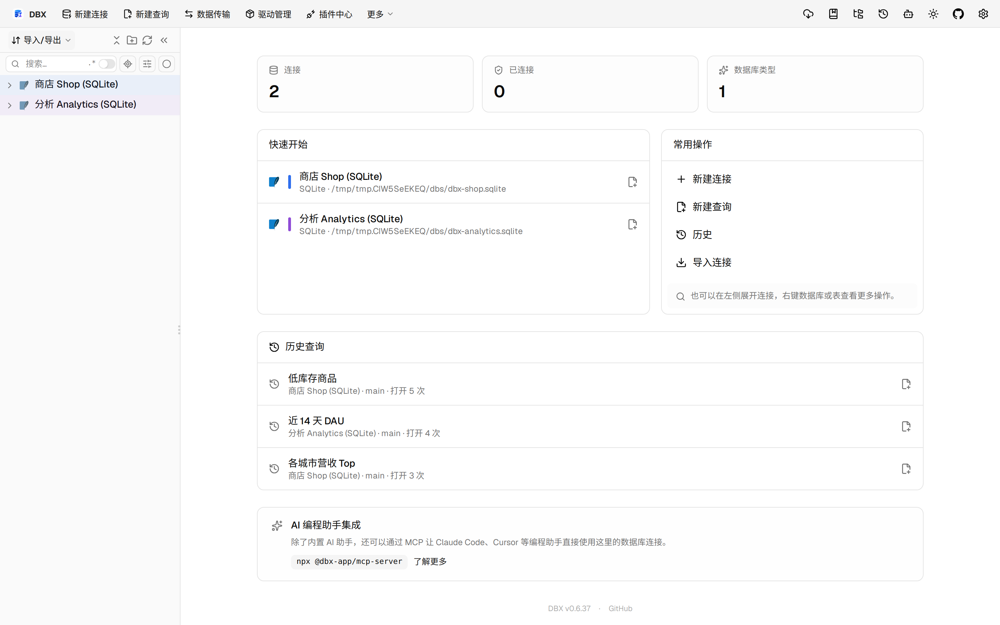
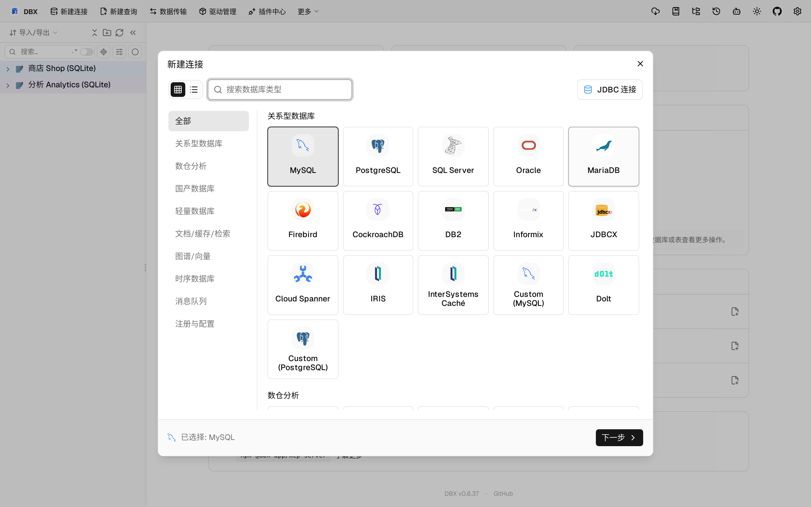
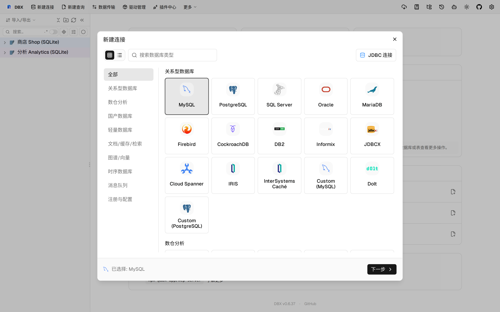

#10841 界面预览
commit f19567b · 回到 PR · 这个 PR 在界面上把“明文导出配置”改成了带凭据开关的确认弹窗，并把连接类型选择器的数据库分类导航改成了默认“全部”视图，支持在全部分类下浏览完整目录、减少重复项。
⚠️ 这次录制有 9 步没能按计划执行；带 ⚠️ 的截图拍摄于步骤失败之后，画面未必是说明文字所描述的状态。
红线是鼠标走过的轨迹，红色圆环是一次点击；底部文字是这一步在做什么。多个场景各自从应用初始状态开始。空格暂停，← → 逐段查看。
 ⚠️ 明文导出凭据开关 · 查看不加密导出时的默认提示和凭据选项
⚠️ 明文导出凭据开关 · 查看不加密导出时的默认提示和凭据选项

⚠️ 明文导出凭据开关 · 查看勾选后的文案和警告样式

连接类型选择器的全部视图 · 查看数据库类型选择器默认的全部分类视图

⚠️ 连接类型选择器的全部视图 · 查看全部分类下的完整数据库类型目录